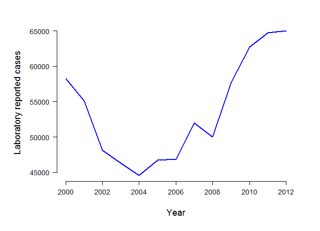

Rapid host switching in generalist Campylobacter strains erodes the signal for tracing human infections
Bethany Dearlove
University of Cambridge
Campylobacter
- Major cause of bacterial gastroenteritis.
- Causes severe diarrhoea, vomiting and abdominal pain.
- Symptoms last 7-10 days.
- Can lead to more serious diseases such as Guillain-Barré syndrome and reactive arthritis.
Increasing incidence

Data source: HPE
Transmission
- Common transmission routes:
- Undercooked meat and unpasteurised milk
- Untreated water
- Human-to human-transmission rare
Zoonosis
- Range of wild and domestic hosts
- Asymptomatic carriage in the gut microbiota.
- Contamination can occur any time from farmyard to fork.


Characterising zoonosis
- MLST analyses have shown that:
- Populations in different host species tend to be genetically isolated, despite shared geography.
- However, some of the most common disease-causing strains are isolated from multiple host species.
Characterising zoonosis

Characterising zoonosis
- Genuine generalists?
- Just the limited resolution of MLST?
Aim:
To investigate the utility of whole-genome sequences for
- estimating the rate of zoonosis
- improving the accuracy of source attribution for clinical cases
in these clonal complexes.
Challenges
- Zoonosis model
- Recombination
- Computation
Modelling zoonosis
- Phylogeography model (Lemey et al., 2009)
- If adapted in the past, would expect isolates from same host population to cluster together.
Phylogeography


Transitions between nucleotides
N = A or C or G or T
Accounting for ancestral recombination
- Substitution model
- Relaxed clock
- Gamma site heterogeneity
- Removal of homoplasies
- Hedge and Wilson (2014)
ST-45 complex

ST-21 complex

ST-828 complex

Parameter estimates
Estimated one jump every...
- 1.6 years in ST-21
- 1.8 years in ST-45
- 12 years in ST-828
Parameter estimates

Source of clinical cases

Summary
Isolates from different host species are often more closely related than those isolated from the same host species.
As expected from previous MLST studies, much ancestry is inferred to occur within chickens.
- MRCA of all three complexes.
Summary
Cannot properly attribute at the individual level in these complexes due to weak host signal.
- Most likely due to generalist nature of these complexes, and uncertainty reflects make up of host population.
- Signal could be drowned out or in accessory genome.
Evidence of potential for whole genomes
- BUT the extra information from WGS does not overcome the need for detailed sampling.
Acknowledgements
Daniel Wilson
Samuel Sheppard
Ben Pascoe
Guillaume Meric
Alison Cody
Simon Frost